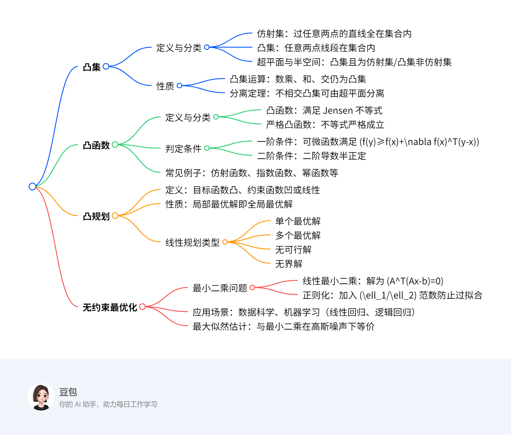

最优化入门¶
总览¶
一段话总结¶
文档围绕最优化方法展开，首先介绍凸集的定义（如仿射集、超平面、半空间）及性质（如凸集交仍为凸集、超平面分离定理），接着阐述凸函数的判定条件（一阶、二阶条件）及常见例子（仿射函数、指数函数等），然后讨论凸规划的性质（局部最优即全局最优）和线性规划的不同类型（单个最优解、多个最优解、无可行解、无界解），最后介绍无约束最优化问题（如最小二乘问题）及其在数据科学和机器学习中的应用（正则化、最大似然估计等），强调凸优化在保证全局最优解上的优势。

详细总结¶
一、凸集及其性质¶
定义：
- 仿射集：包含任意两点连线的集合，如线性方程组 \(Ax=b\) 的解集。
- 凸集：包含任意两点线段的集合，仿射集是凸集的子集。
- 超平面与半空间：
- 超平面：\(\{x | a^T x = b\}\)，既是凸集又是仿射集。
- 半空间：\(\{x | a^T x ≤ b\}\)，是凸集但非仿射集。
性质：
1. 运算封闭性：
- 凸集的数乘（\(kS\)）、和（\(S+T\)）、交（\(S∩T\)）仍为凸集。
2. 分离定理：不相交的凸集可由超平面分离，即存在 \(p\) 和 \(\alpha\) 使得 \(S_1 \subseteq \{x | p^T x ≤ \alpha\}\) 且 \(S_2 \subseteq \{x | p^T x ≥ \alpha\}\)。
3. 投影唯一性：非空闭凸集外一点到该集合存在唯一最近点。
二、凸函数及其判定¶
定义：
- 若函数 \(f\) 的定义域为凸集，且对任意 \(x, y\) 和 \(0≤\theta≤1\)，有 \(f(\theta x + (1-\theta)y) ≤ \theta f(x) + (1-\theta)f(y)\)，则 \(f\) 为凸函数。严格凸函数要求不等式严格成立。
判定条件：
| 条件类型 | 具体描述 |
|----------|----------|
| 一阶条件（可微） | \(f(y) ≥ f(x) + \nabla f(x)^T(y-x)\) 对任意 \(x, y\) 成立 |
| 二阶条件（二阶可微） | 海森矩阵 \(\nabla^2 f(x) \succeq 0\)（半正定） |
常见凸函数：
- 仿射函数（如 \(ax+b\)）、指数函数（\(e^{ax}\)）、幂函数（\(\alpha≥1\) 或 \(\alpha≤0\) 时 \(x^\alpha\)）、范数函数。
三、凸规划与线性规划¶
凸规划：
- 形式：目标函数 \(f(x)\) 凸，不等式约束 \(c_i(x)\) 为凹函数，等式约束为线性函数。
- 性质：局部极小点即全局极小点，极小点集合为凸集。
线性规划（LP）类型：
| 类型 | 特点 | 示例 |
|------|------|------|
| 单个最优解 | 可行域有界且唯一极值点 | \(max Z=6x_1+4x_2\)，约束为线性不等式 |
| 多个最优解 | 目标函数与某约束边界平行 | \(min z=-10x_1-15x_2\)，两约束边界斜率与目标函数一致 |
| 无可行解 | 约束条件矛盾 | \(5x_1+6x_2≥900\) 与 \(2x_1+3x_2≤300\) 无交集 |
| 无界解 | 可行域无界且目标函数可无限优化 | \(min z=-3x_1-4x_2\)，可行域向右上方无限延伸 |
四、无约束最优化问题¶
最小二乘问题：
- 线性最小二乘：\(min \frac{1}{2}\|Ax-b\|_2^2\)，解为 \(x=(A^TA)^{-1}A^Tb\)（当 \(A\) 列满秩时）。
- 正则化：
- \(\ell_2\) 正则化：\(min \sum (b_i-\phi_i(x))^2 + \mu\|x\|_2^2\)，防止过拟合。
- \(\ell_1\) 正则化：\(min \sum (b_i-\phi_i(x))^2 + \mu\|x\|_1\)，促进解的稀疏性。
应用场景：
- 数据科学：拟合含噪声数据，如线性回归模型 \(b=Ax+\varepsilon\)，高斯噪声下最小二乘等价于最大似然估计。
- 机器学习：
- 线性回归：\(min \sum \frac{1}{2}\|a_i^Tx-b_i\|_2^2 + \mu\varphi(x)\)
- 逻辑回归：\(min \sum \frac{1}{N} \log(1+\exp(-b_i a_i^Tx)) + \mu\varphi(x)\)
关键问题¶
-
问题：凸集与仿射集的核心区别是什么？
答案：仿射集要求包含任意两点的整条直线，而凸集仅要求包含任意两点的线段。仿射集一定是凸集，但凸集不一定是仿射集（如半空间是凸集但非仿射集）。 -
问题：如何判断一个二次函数是否为凸函数？
答案：对于二次函数 \(f(x)=\frac{1}{2}x^TPx+q^Tx+r\)，其凸性由矩阵 \(P\) 决定：当 \(P \succeq 0\)（半正定）时，\(f(x)\) 为凸函数；若 \(P \succ 0\)（正定），则为严格凸函数。 -
问题：为什么凸规划的局部最优解一定是全局最优解？
答案：假设存在局部最优解 \(x\) 和全局最优解 \(y\)，构造凸组合 \(z=\theta y + (1-\theta)x\)（\(0<\theta<1\)），则 \(f(z) ≤ \theta f(y) + (1-\theta)f(x)\)。由于 \(f(y) < f(x)\)，当 \(\theta\) 足够小时，\(f(z) < f(x)\)，与 \(x\) 是局部最优解矛盾，故凸规划的局部最优解必为全局最优解。
凸集¶
一、核心定义与基本概念¶
1. 仿射集与凸集
- 仿射集：若集合 \( \mathcal{C} \) 中任意两点的连线全包含于 \( \mathcal{C} \)，即对任意 \( x_1, x_2 \in \mathcal{C} \) 和 \( \theta \in \mathbb{R} \)，有 \( \theta x_1 + (1-\theta) x_2 \in \mathcal{C} \)。
- 例：线性方程组 \( Ax = b \) 的解集是仿射集，因解集中任意两点的线性组合仍为解。
- 凸集：若集合 \( \mathcal{C} \) 中任意两点的线段全包含于 \( \mathcal{C} \)，即对任意 \( x_1, x_2 \in \mathcal{C} \) 和 \( 0 \leq \theta \leq 1 \)，有 \( \theta x_1 + (1-\theta) x_2 \in \mathcal{C} \)。
- 关系：仿射集是凸集的子集，凸集包含仿射集。
2. 特殊凸集
- 超平面：形如 \( \{ x \mid a^T x = b \} \)（\( a \neq 0 \)）的集合，既是凸集又是仿射集。
- 例：二维空间中，直线 \( 2x + 3y = 5 \) 是超平面。
- 半空间：形如 \( \{ x \mid a^T x \leq b \} \)（\( a \neq 0 \)）的集合，是凸集但非仿射集。
- 例：二维空间中，区域 \( 2x + 3y \leq 5 \) 是半空间。
二、凸集的性质与定理¶
1. 运算性质
- 数乘、和、交：
- 若 \( S \) 是凸集，则 \( kS = \{ ks \mid s \in S \} \) 是凸集。
- 若 \( S \) 和 \( T \) 是凸集，则 \( S + T = \{ s + t \mid s \in S, t \in T \} \) 是凸集。
- 任意凸集的交集仍是凸集，如多个半空间的交集构成凸多面体。
2. 超平面分离定理
- 定理：若 \( S_1 \) 和 \( S_2 \) 是不相交的凸集，则存在非零向量 \( p \) 和常数 \( \alpha \)，使得：
[
S_1 \subseteq { x \mid p^T x \leq \alpha }, \quad S_2 \subseteq { x \mid p^T x \geq \alpha }
]
- 应用：机器学习中的SVM算法基于此定理，通过寻找超平面分离不同类别数据。
- 引理：若 \( y \) 是凸集 \( S \) 外一点，则存在超平面分离 \( y \) 和 \( S \)，即存在 \( p \neq 0 \) 使得 \( p^T x \leq \alpha < p^T y \) 对任意 \( x \in S \) 成立。
三、凸集的判定与示例¶
1. 判定方法
- 几何直观：集合内任意两点连线不“穿出”集合边界。
- 代数定义：对任意 \( x, y \in \mathcal{C} \) 和 \( 0 \leq \theta \leq 1 \)，验证 \( \theta x + (1-\theta) y \in \mathcal{C} \)。
2. 示例
- 凸集：
- 球体 \( \{ x \mid \| x - x_0 \| \leq r \} \)、正多边形内部、半空间。
- 非凸集：
- 圆环 \( \{ x \mid r_1 < \| x \| < r_2 \} \)、月牙形区域（因存在两点连线穿出区域）。
四、凸集在优化中的应用¶
1. 仿射变换的保凸性
- 若 \( f(x) = Ax + b \) 是仿射变换，\( S \) 是凸集，则 \( f(S) \) 和 \( f^{-1}(S) \) 均为凸集。
- 例：线性矩阵不等式 \( x_1 A_1 + \cdots + x_m A_m \preceq B \) 的解集是凸集，因可视为仿射变换后的结果。
2. 凸集与优化问题
- 凸优化问题中，可行域为凸集，目标函数为凸函数，保证局部最优解即全局最优解。
- 例：线性规划、二次规划的可行域均为凸集，可利用凸性高效求解。
五、关键定理证明（超平面分离定理）¶
目标：证明不相交凸集 \( S_1 \) 和 \( S_2 \) 可被超平面分离。
步骤：
1. 构造差集：令 \( S = \{ y - z \mid y \in S_1, z \in S_2 \} \)，显然 \( S \) 是凸集且 \( 0 \notin S \)。
2. 应用引理：存在 \( p \neq 0 \) 使得 \( p^T x < 0 \) 对任意 \( x \in S \)，即 \( p^T(y - z) < 0 \)，故 \( p^T y < p^T z \)。
3. 选取常数 \( \alpha \)：取 \( \alpha \) 为 \( p^T y \) 的上确界或 \( p^T z \) 的下确界，满足 \( p^T y \leq \alpha \leq p^T z \)。
结论：超平面 \( \{ x \mid p^T x = \alpha \} \) 分离 \( S_1 \) 和 \( S_2 \)。
六、重点总结¶
| 概念 | 核心定义 | 关键性质/定理 | 应用场景 |
|---|---|---|---|
| 仿射集 | 包含任意两点连线的集合 | 线性方程组解集是仿射集 | 线性约束建模 |
| 凸集 | 包含任意两点线段的集合 | 交集、仿射变换保凸性 | 优化可行域、分类问题 |
| 超平面/半空间 | 线性等式/不等式定义的集合 | 超平面分离定理 | SVM、凸优化 |
| 分离定理 | 不相交凸集可由超平面分离 | 引理证明凸集外点与凸集的分离性 | 机器学习分类、可行性分析 |
总结：凸集是最优化和机器学习的基础概念，超平面分离定理为分类问题提供了理论支撑，仿射集与凸集的性质确保了优化问题的高效求解。
凸函数¶
一、核心定义与基础概念¶
1. 适当函数
- 定义：若广义实值函数 \( f \) 满足：
- 存在 \( x \in \mathcal{X} \) 使得 \( f(x) < +\infty \)（至少一处有限）；
- 对任意 \( x \in \mathcal{X} \)，\( f(x) > -\infty \)（无负无穷值）。
- 作用：确保函数在定义域内可优化，避免极端值干扰。
2. 开集与闭集
- 开集：集合中每一点均存在邻域完全包含于自身（如圆形内部）。
- 闭集：开集的补集，包含所有极限点（如圆形及其边界）。
3. 上方图与闭函数
- 上方图（epi f）：\( \{(x, t) \mid f(x) \leq t\} \)，直观表示函数“上方”区域。
- 闭函数：若上方图 \( \text{epi } f \) 是闭集，则 \( f \) 为闭函数，常用于保证优化问题解的存在性。
二、凸函数的定义与分类¶
1. 凸函数
- 定义：设 \( f \) 为适当函数，定义域 \( \text{dom } f \) 为凸集，且对任意 \( x, y \in \text{dom } f \) 和 \( 0 \leq \theta \leq 1 \)，满足：
[
f(\theta x + (1-\theta)y) \leq \theta f(x) + (1-\theta)f(y)
]
- 几何意义：函数图像上任意两点连线不在图像下方。
2. 严格凸函数
- 定义：不等式严格成立（\( < \) 替代 \( \leq \)），即不存在平坦区域，极值唯一。
3. 常见凸函数与凹函数
| 类型 | 凸函数示例 | 凹函数示例 |
|------------|-------------------------------------|---------------------------|
| 线性函数 | 仿射函数 \( ax + b \)（同时也是凹函数） | 无（仿射函数同时为凸/凹） |
| 幂函数 | \( x^\alpha \)（\( \alpha \geq 1 \) 或 \( \alpha \leq 0 \)，\( x > 0 \)） | \( x^\alpha \)（\( 0 \leq \alpha \leq 1 \)，\( x > 0 \)） |
| 范数函数 | \( \| x \|_p \)（\( p \geq 1 \)） | 无 |
| 指数函数 | \( e^{ax} \)（任意 \( a \)） | 无 |
| 负熵 | \( x \log x \)（\( x > 0 \)） | \( -\log x \)（\( x > 0 \)） |
三、凸函数的判定方法¶
1. 限制到直线法（基本方法）
- 原理：若函数 \( f \) 沿任意直线的限制 \( g(t) = f(x + tv) \) 是一维凸函数，则 \( f \) 是凸函数。
- 示例：验证 \( f(X) = -\log \det X \)（\( X \succ 0 \)）是否为凸函数：
- 取直线 \( X + tV \)（\( V \) 为对称矩阵），则 \( g(t) = -\log \det(X + tV) \)。
- 利用特征值分解证明 \( g(t) \) 是凸函数（细节见文档推导）。
2. 一阶条件（可微函数）
- 条件：\( f \) 可微且对任意 \( x, y \in \text{dom } f \)，有：
[
f(y) \geq f(x) + \nabla f(x)^T(y - x)
]
- 几何意义：函数在 \( x \) 处的切平面始终位于函数图像下方。
- 证明（必要性）：
由凸函数定义，\( f(x + t(y - x)) \leq (1 - t)f(x) + tf(y) \)，令 \( t \to 0 \) 取极限得一阶不等式。
- 证明（充分性）：
构造 \( z = \theta x + (1 - \theta)y \)，应用一阶条件于 \( x \) 和 \( y \)，相加后得凸函数定义式。
3. 二阶条件（二阶可微函数）
- 条件：海森矩阵 \( \nabla^2 f(x) \succeq 0 \)（半正定）对任意 \( x \in \text{dom } f \) 成立。
- 若 \( \nabla^2 f(x) \succ 0 \)（正定），则 \( f \) 是严格凸函数。
- 示例：二次函数 \( f(x) = \frac{1}{2}x^T Px + q^T x + r \)：
- 梯度 \( \nabla f(x) = Px + q \)，海森矩阵 \( \nabla^2 f(x) = P \)。
- 当 \( P \succeq 0 \) 时，\( f(x) \) 是凸函数；当 \( P \succ 0 \) 时，是严格凸函数。
4. 梯度单调性
- 条件：梯度 \( \nabla f \) 是单调映射，即对任意 \( x, y \)，有：
[
(\nabla f(x) - \nabla f(y))^T(x - y) \geq 0
]
- 等价性：与一阶条件等价，适用于分析优化算法收敛性。
四、凸函数的性质与应用¶
1. Jensen不等式
- 基础形式：对凸函数 \( f \)，有 \( f(\theta x + (1-\theta)y) \leq \theta f(x) + (1-\theta)f(y) \)。
- 概率形式：对随机变量 \( z \)，有 \( f(E[z]) \leq E[f(z)] \)。
- 例：\( f(x) = x^2 \)（凸函数），则 \( (E[z])^2 \leq E[z^2] \)（方差非负性）。
2. 在优化中的意义
- 凸优化优势：若目标函数为凸函数，可行域为凸集，则局部最优解即全局最优解（如线性规划、岭回归）。
- 正则化应用：
- \( \ell_2 \) 正则项 \( \|x\|_2^2 \) 是凸函数，确保优化问题为凸问题，避免局部极小。
五、关键总结¶
| 判定方法 | 适用条件 | 核心公式/条件 | 示例验证 |
|---|---|---|---|
| 限制到直线法 | 任意函数 | \( g(t) = f(x + tv) \) 是凸函数 | \( f(X) = -\log \det X \) |
| 一阶条件 | 可微函数 | \( f(y) \geq f(x) + \nabla f(x)^T(y-x) \) | 线性函数、二次函数 |
| 二阶条件 | 二阶可微函数 | \( \nabla^2 f(x) \succeq 0 \) | \( f(x) = \frac{1}{2}x^T Px \) |
| 梯度单调性 | 可微函数 | \( (\nabla f(x)-\nabla f(y))^T(x-y) \geq 0 \) | 凸函数梯度单调递增 |
总结：凸函数通过严格的数学定义和判定条件，为优化问题提供了全局最优解的理论保证，广泛应用于机器学习（如正则化）、统计分析（如最大似然估计）和工程优化等领域。理解凸函数的性质是设计高效优化算法的基础。
凸规划¶
一、核心定义与问题形式¶
定义：
凸规划是一类特殊的优化问题，其目标函数为凸函数，不等式约束函数为凹函数，等式约束函数为线性函数。其一般形式为：
[
\begin{aligned}
\min & \quad f(x) \
\text{s.t.} & \quad g_i(x) \leq 0, \quad i=1,2,\dots,m \quad \text{（凹函数）} \
& \quad h_j(x) = 0, \quad j=1,2,\dots,l \quad \text{（线性函数）}
\end{aligned}
]
- 核心性质：凸规划的局部最优解必定是全局最优解，且最优解的集合为凸集。
二、凸规划与非凸规划的对比¶
| 特征 | 凸规划 | 非凸规划 |
|---|---|---|
| 目标函数 | 凸函数 | 非凸函数（如非正定二次函数） |
| 约束函数 | 不等式约束为凹函数，等式约束为线性 | 约束函数可能为非凸函数 |
| 最优解性质 | 局部最优即全局最优 | 可能存在多个局部最优解，需全局搜索 |
| 求解难度 | 可通过梯度法等高效求解 | 需启发式算法或特殊处理 |
示例：
非凸规划：
[
\min \quad x_1^2 + x_2^2 \
\text{s.t.} \quad \frac{x_1}{1 + x_2^2} \leq 0 \quad \text{（非线性非凹约束）}
]
凸规划：
[
\min \quad x_1^2 + x_2^2 \
\text{s.t.} \quad x_1 \leq 0 \quad \text{（线性凹约束，因 \(g(x)=-x_1\) 是凸函数，故 \(x_1 \leq 0\) 等价于凹约束）} \
\quad \quad x_1 + x_2 = 0 \quad \text{（线性等式约束）}
]
- 等价性说明：两问题定义域相同，但第一个约束为非线性非凹，第二个约束为线性，故前者非凸、后者凸。
三、关键定理：局部最优解即全局最优解¶
定理内容：
若 \(x\) 是凸规划的局部最优解，则 \(x\) 必为全局最优解。
证明思路：
1. 反证法假设：设 \(x\) 是局部最优解，存在全局最优解 \(y\) 满足 \(f(y) < f(x)\)。
2. 构造凸组合：取 \(z = \theta y + (1-\theta)x\)，其中 \(\theta = \frac{R}{2\|y - x\|_2}\)（\(R\) 为局部最优邻域半径），则 \(z\) 在 \(x\) 的邻域内（\(\|z - x\|_2 = \frac{R}{2} < R\)）。
3. 利用凸性：由凸函数性质，\(f(z) \leq \theta f(y) + (1-\theta)f(x)\)。
4. 导出矛盾：因 \(f(y) < f(x)\)，得 \(f(z) < f(x)\)，与 \(x\) 是局部最优解矛盾，故假设不成立。
四、求解方法与示例¶
1. 求解方法概述
- 梯度下降法：适用于可微凸函数，迭代更新 \(x_{k+1} = x_k - \alpha \nabla f(x_k)\)。
- 牛顿法：利用二阶导数信息，收敛速度更快，适用于二次凸函数。
- 拉格朗日乘数法：处理带约束的凸规划，通过引入拉格朗日乘子将约束问题转化为无约束问题。
2. 示例：线性规划（凸规划特例）
问题：
[
\max \quad 6x_1 + 4x_2 \
\text{s.t.} \quad 2x_1 + x_2 \leq 10 \
\quad \quad x_1 + x_2 \leq 8 \
\quad \quad x_2 \leq 7 \
\quad \quad x_1, x_2 \geq 0
]
求解步骤：
1. 确定可行域：由不等式约束画出凸多边形，顶点为 \((0,0)\)、\((0,7)\)、\((2,6)\)、\((5,0)\)、\((8,0)\)（但需验证是否满足所有约束）。
2. 顶点评估：
- \((0,0)\)：目标值 \(0\)
- \((0,7)\)：目标值 \(4 \times 7 = 28\)
- \((2,6)\)：目标值 \(6 \times 2 + 4 \times 6 = 36\)（最大值）
- \((5,0)\)：目标值 \(6 \times 5 = 30\)
3. 结论：最优解为 \((2,6)\)，目标值 \(36\)。
五、应用场景¶
- 机器学习：
- 线性回归、逻辑回归的正则化模型（如岭回归、LASSO）均为凸规划，保证全局最优解。
- 工程优化：
- 资源分配、网络流优化等问题可建模为线性规划或二次规划（凸规划特例）。
- 统计分析：
- 最大熵模型、支持向量机（SVM）的对偶问题均属于凸规划。
六、重点总结¶
- 核心优势：凸规划通过严格的凸性保证，避免陷入局部最优，且可利用成熟的凸优化算法高效求解。
- 判定关键：验证目标函数凸性、约束函数的凹性或线性性。
- 典型示例：线性规划、二次规划（如最小二乘问题）、带凸约束的优化问题。
总结：凸规划是最优化理论中的重要分支，其理论性质为高效求解提供了保障，广泛应用于数据科学、工程和机器学习领域。
线性规划与无约束最优化：最小二乘问题¶
一、线性规划的无界解¶
定义：
线性规划（LP）的可行域无界且目标函数可无限优化时，称为无界解。此时不存在有限最优解，目标值趋向正无穷或负无穷。
判定条件：
- 可行域无界（如二维平面中约束形成开放区域）。
- 目标函数在可行域方向上无界（如目标函数梯度与可行域延伸方向夹角小于90度）。
示例：
步骤分析：
- 绘制可行域：
- \(x_1 \leq 3\)：直线 \(x_1=3\) 左侧区域。
- \(x_1 - x_2 \leq 1\)：直线 \(x_2 \geq x_1 - 1\) 上方区域。
- \(x_1, x_2 \geq 0\)：第一象限。
- 可行域为第一象限内，\(x_1 \leq 3\) 且 \(x_2 \geq x_1 - 1\) 的开放区域（向右上方无限延伸）。
- 目标函数趋势：
- 目标函数 \(z = -3x_1 - 4x_2\) 在 \(x_2\) 增大时趋向负无穷，可行域允许 \(x_2\) 无限增大，故无界解存在。
结论：该LP问题无界，目标值可无限减小。
二、无约束最优化问题¶
定义：
无约束最优化问题形如：
其中 \(f(x)\) 为连续可导函数，无需满足显式约束条件。
求解方法：
- 解析法：通过求导找临界点（梯度为零），适用于简单函数。
- 一阶必要条件：\(\nabla f(x^*) = 0\)（全局最优需二阶充分条件 \(\nabla^2 f(x^*) \succ 0\)）。
- 数值法：梯度下降、牛顿法等迭代算法，适用于复杂函数。
示例：线性最小二乘问题
问题：求解 \( \min_{x} \frac{1}{2}\|Ax - b\|_2^2 \)，其中 \(A = \begin{bmatrix}1 & 2 \\ 3 & 4 \\ 5 & 6\end{bmatrix}\)，\(b = \begin{bmatrix}10 \\ 20 \\ 30\end{bmatrix}\)。
解析解法步骤：
- 目标函数展开：
[
f(x) = \frac{1}{2} \left[(x_1 + 2x_2 - 10)^2 + (3x_1 + 4x_2 - 20)^2 + (5x_1 + 6x_2 - 30)^2\right]
]
2. 求梯度：
[
\nabla f(x) = A^T(Ax - b) = \begin{bmatrix}1 & 3 & 5 \ 2 & 4 & 6\end{bmatrix} \left( \begin{bmatrix}1 & 2 \ 3 & 4 \ 5 & 6\end{bmatrix} \begin{bmatrix}x_1 \ x_2\end{bmatrix} - \begin{bmatrix}10 \ 20 \ 30\end{bmatrix} \right)
]
计算得：
[
\nabla f(x) = \begin{bmatrix}35x_1 + 44x_2 - 220 \ 44x_1 + 56x_2 - 280\end{bmatrix}
]
3. 令梯度为零：
[
\begin{cases}
35x_1 + 44x_2 = 220 \
44x_1 + 56x_2 = 280
\end{cases}
]
4. 求解线性方程组：
- 系数矩阵行列式 \(35 \times 56 - 44 \times 44 = -4 \neq 0\)，唯一解为 \(x_1 = 0\)，\(x_2 = 5\)。
5. 验证凸性：
- 海森矩阵 \(A^TA = \begin{bmatrix}35 & 44 \\ 44 & 56\end{bmatrix}\) 正定（特征值均正），故为全局最优解。
结论：最优解 \(x = \begin{bmatrix}0 \\ 5\end{bmatrix}\)，目标值 \(f(x) = 50\)。
三、最小二乘问题的扩展¶
1. 正则化最小二乘
问题形式：
[
\min_{x} \frac{1}{2}|Ax - b|_2^2 + \mu |x|_2^2 \quad (\ell_2 \text{正则化})
]
- 作用：防止过拟合，\(\mu > 0\) 平衡拟合误差与解的光滑性。
- 解析解：\(x = (A^TA + \mu I)^{-1}A^Tb\)。
2. 非线性最小二乘
问题形式：
[
\min_{x} \sum_{i=1}^m r_i(x)^2, \quad r_i(x) \text{为非线性函数}
]
- 求解方法：
- 梯度下降：\(x_{k+1} = x_k - \alpha \sum_{i=1}^m r_i(x_k) \nabla r_i(x_k)\)。
- 高斯-牛顿法：利用雅可比矩阵线性化，迭代求解 \(J^TJ \Delta x = -J^Tr\)。
示例：指数拟合
问题：拟合数据 \(\{(1, 2), (2, 5), (3, 10)\}\) 到模型 \(y = ae^{bx}\)。
步骤：
1. 线性化：取对数得 \(\ln y = \ln a + bx\)，令 \(z = \ln y\)，\(c = \ln a\)，转化为线性最小二乘 \(z = c + bx\)。
2. 构造矩阵：
\(A = \begin{bmatrix}1 & 1 \\ 1 & 2 \\ 1 & 3\end{bmatrix}\)，\(b = \begin{bmatrix}\ln 2 \\ \ln 5 \\ \ln 10\end{bmatrix}\)。
3. 求解：利用解析法得 \(c \approx 0.3, b \approx 1.1\)，故拟合函数为 \(y = e^{0.3}e^{1.1x} \approx 1.35e^{1.1x}\)。
四、重点总结¶
| 问题类型 | 核心特征 | 求解方法 | 典型示例 |
|---|---|---|---|
| 线性规划无界解 | 可行域无界，目标函数可无限优化 | 几何分析可行域延伸方向 | 二维开放区域最小化问题 |
| 无约束优化 | 无显式约束，依赖函数导数性质 | 解析法、梯度下降法 | 线性最小二乘 |
| 最小二乘 | 最小化误差平方和，线性/非线性 | 矩阵求逆、迭代算法 | 数据拟合、回归分析 |
关键结论：
- 线性规划无界解需通过可行域几何形状判定；
- 无约束优化中，凸函数（如最小二乘）可通过梯度为零求全局最优；
- 正则化技术是处理过拟合的有效手段，广泛应用于机器学习。
数据科学中的最优化应用¶
一、最小二乘问题¶
核心定义：
最小二乘问题旨在最小化误差的平方和，形式为：
[
\min_{x \in \mathbb{R}^n} \sum_{i=1}^{m} r_i^2(x)
]
- 线性最小二乘：当 \( r_i(x) = a_i^T x - b_i \) 时，目标函数为二次凸函数，可通过矩阵运算高效求解。
- 非线性最小二乘：当 \( r_i(x) \) 为非线性函数时，需迭代算法求解。
求解方法：
1. 线性最小二乘（解析法）：
- 目标函数：\( f(x) = \frac{1}{2}\|Ax - b\|_2^2 \)（\( A \) 为设计矩阵，\( b \) 为观测值）。
- 最优解：通过梯度为零求得 \( x = (A^T A)^{-1} A^T b \)（当 \( A \) 列满秩时）。
2. 非线性最小二乘（迭代法）：
- 如高斯-牛顿法：利用雅可比矩阵线性化，迭代更新 \( x_{k+1} = x_k - (J^T J)^{-1} J^T r \)。
示例：线性回归拟合
问题：用线性模型 \( y = \theta_1 x + \theta_0 \) 拟合数据点 \((1, 2)\)、\((2, 4)\)、\((3, 6)\)。
步骤：
1. 构造矩阵：
[
A = \begin{bmatrix}1 & 1 \ 1 & 2 \ 1 & 3\end{bmatrix}, \quad b = \begin{bmatrix}2 \ 4 \ 6\end{bmatrix}
]
2. 计算最优解：
[
x = (A^T A)^{-1} A^T b = \begin{bmatrix}1 & 1 & 1 \ 1 & 2 & 3\end{bmatrix}^{-1} \begin{bmatrix}1 & 1 & 1 \ 1 & 2 & 3\end{bmatrix} \begin{bmatrix}2 \ 4 \ 6\end{bmatrix} = \begin{bmatrix}0 \ 2\end{bmatrix}
]
结论：拟合模型为 \( y = 2x \)，误差平方和为0（完美拟合）。
二、正则化技术¶
核心思想：
在目标函数中加入正则项，平衡拟合误差与解的复杂度，防止过拟合。常见形式：
- \(\ell_2\) 正则化（岭回归）：\( \min \sum (b_i - \phi_i(x))^2 + \mu \|x\|_2^2 \)
- \(\ell_1\) 正则化（LASSO）：\( \min \sum (b_i - \phi_i(x))^2 + \mu \|x\|_1 \)（促进稀疏解）
求解方法：
- 岭回归解析解：\( x = (A^T A + \mu I)^{-1} A^T b \)。
- 迭代法：如梯度下降法，对正则项求导后更新参数。
示例：带 \(\ell_2\) 正则化的线性回归
问题：拟合数据 \( A = \begin{bmatrix}1 & 1 \\ 1 & 2 \\ 1 & 3\end{bmatrix}, b = \begin{bmatrix}2 \\ 4 \\ 7\end{bmatrix} \)，取 \(\mu = 0.1\)。
步骤：
1. 构造正则化矩阵：
[
A^T A + \mu I = \begin{bmatrix}3 & 6 \ 6 & 14\end{bmatrix} + 0.1\begin{bmatrix}1 & 0 \ 0 & 1\end{bmatrix} = \begin{bmatrix}3.1 & 6 \ 6 & 14.1\end{bmatrix}
]
2. 求解：
[
x = (A^T A + \mu I)^{-1} A^T b = \begin{bmatrix}1.32 \ 1.88\end{bmatrix}
]
结论：拟合模型为 \( y = 1.88x + 1.32 \)，正则化抑制了过拟合风险。
三、最大似然估计（MLE）¶
核心定义：
通过最大化观测数据的似然函数，估计概率分布参数。若数据 \( b_i = a_i^T x + \varepsilon_i \)，且噪声 \(\varepsilon_i \sim \mathcal{N}(0, \sigma^2)\)，则对数似然函数为：
[
\ell(x) = -\frac{m}{2}\ln(2\pi\sigma^2) - \frac{1}{2\sigma^2}|Ax - b|_2^2
]
与最小二乘的关系：高斯噪声下，最大似然估计等价于最小二乘问题。
求解方法：
1. 解析法：对高斯分布，直接求导得最小二乘解。
2. 数值法：对非高斯分布，如泊松分布，使用梯度上升法最大化似然函数。
示例：高斯噪声下的MLE
问题：已知数据 \( b = Ax + \varepsilon \)，\(\varepsilon \sim \mathcal{N}(0, 1)\)，求 \( x \) 的最大似然估计。
步骤：
1. 对数似然函数：
[
\ell(x) = -\frac{1}{2}|Ax - b|_2^2 + \text{常数}
]
2. 最大化等价于最小化：\( \min \|Ax - b\|_2^2 \)，解为最小二乘解 \( x = (A^T A)^{-1} A^T b \)。
四、机器学习中的最优化问题¶
1. 线性回归
- 目标函数：\( \min \frac{1}{2N}\|Ax - b\|_2^2 + \mu \|x\|_2^2 \)（正则化版本）。
- 求解：解析解或随机梯度下降（SGD）。
2. 逻辑回归
- 目标函数：\( \min \frac{1}{N} \sum_{i=1}^N \ln(1 + e^{-b_i a_i^T x}) + \mu \|x\|_2^2 \)。
- 求解：梯度下降，梯度为 \( \frac{1}{N} \sum_{i=1}^N \frac{-b_i a_i e^{-b_i a_i^T x}}{1 + e^{-b_i a_i^T x}} + 2\mu x \)。
示例：二分类逻辑回归
问题：用逻辑回归区分两类数据，特征矩阵 \( A \) 和标签 \( b \in \{-1, 1\} \)。
步骤：
1. 初始化参数：\( x_0 = 0 \)。
2. 迭代更新：
[
x_{k+1} = x_k - \alpha \left( \frac{1}{N} \sum_{i=1}^N \frac{-b_i a_i e^{-b_i a_i^T x_k}}{1 + e^{-b_i a_i^T x_k}} + 2\mu x_k \right)
]
3. 收敛条件：梯度范数小于阈值，输出最终 \( x \)。
五、重点总结¶
| 应用场景 | 核心方法 | 目标函数示例 | 关键性质 |
|---|---|---|---|
| 数据拟合 | 最小二乘法 | \( \min \|Ax - b\|_2^2 \) | 凸问题，全局最优解 |
| 过拟合控制 | 正则化（\(\ell_1/\ell_2\)） | \( \min \|Ax - b\|_2^2 + \mu \|x\|_1 \) | \(\ell_1\) 促稀疏，\(\ell_2\) 促光滑 |
| 概率建模 | 最大似然估计 | ( \max \ell(x) = \sum \ln p(b_i | a_i; x) ) |
| 机器学习 | 梯度下降/解析法 | 逻辑回归、线性回归损失函数 | 迭代求解，需调参学习率 |
总结：数据科学中的最优化以最小二乘为基础，通过正则化和最大似然估计扩展应用场景，结合机器学习算法实现高效建模，核心目标是在拟合精度与模型复杂度间取得平衡。